What is TEDx?
In the spirit of ideas worth spreading, TED has created a program called TEDx.
TEDx is a program of local, self-organized events that bring people together to share a TED-like experience.
Our event is called TEDx[name], where x = independently organized TED event.
At our TEDx[name] event, TED Talks video and live speakers will combine to spark deep discussion and connection
in a small group.
The TED Conference provides general guidance for the TEDx program, but individual TEDx events, including ours,
are self-organized.